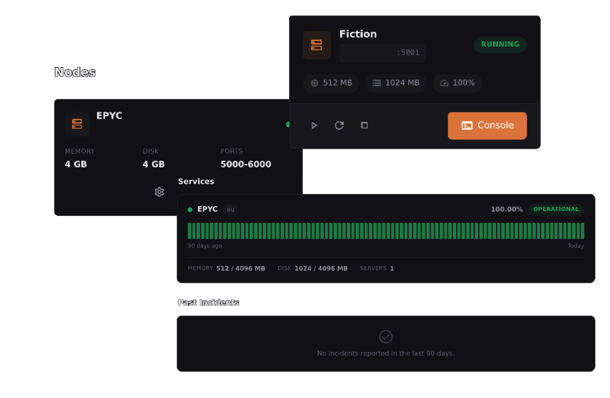

Sodium is an open-source panel for managing game servers.

Built lean so it runs everywhere.
Run commands from your browser, to your dockerized server.
Browse, edit, upload files. Has a code editor with syntax highlighting.
Minecraft, FiveM, ARK, Palworld, and more already set up. Make your own too.
Express + vanilla JS. Pretty lightweight.
Works with a local file out of the box. Need more? Plug in MySQL, PostgreSQL, or SQLite.
Login with Discord, Google, GitHub, whatever.
Back up your servers, download them, restore them. Set up cron jobs to automate it.
Get Discord/Slack pings when stuff happens.
Add your own routes, hooks, middleware. If you dont feel the panel done.
Our own daemon, A fork of Pterodactyl Wings with performance modifications.
From a single VPS to a hosting service.
Perfect for home servers and small communities.
npm start.For high-availability setups.
I think you gotta like it.
| Sodium | Pterodactyl | |
|---|---|---|
| Database | File-based (MySQL/PostgreSQL optional) | MySQL + Redis required |
| Install time | about ~2 min | ~30 min |
| Dependencies | Just Node.js | PHP, Composer, MySQL. |
| OAuth providers | 8 built-in (Discord, GitHub, Google...) | None (community packages) |
| Plugin system | Built-in hooks, routes, middleware | Limited (Blueprints) |
Should take about 2 minutes.